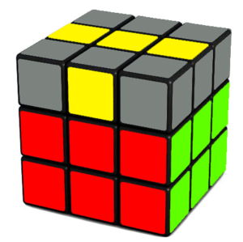

3rd Layer
The cross
These are the steps that will solve the yellow cross of the 3rd layer.

At this point the yellow cross should be ready.
The edges
These are the steps that will position the edges of the yellow cross of the 3rd layer.
The corners - positions
These are the steps that will position the edges of the yellow cross of the 3rd layer.
The corners - orientation
These are the steps that will correct the orientation of the corners of the 3rd layer.